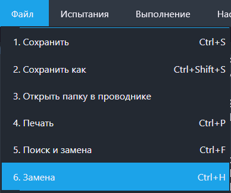
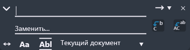

Функция "Замена"
Данная функция открывает меню замены.
ВНИМАНИЕ: данная кнопка доступна только когда открыт хотя бы один текстовый редактор!
Путь и вызов
Нахождение в программе
Верхнее меню → "Файл" → "Замена"
Горячие клавишы
Ctrl + HНа изображении показано нахождение данной функции в программе:

Действия после нажатия
После нажатия горячих клавиш или ЛКМ по кнопке "Поиск" откроется меню поиска (рисунок 2).

Подробную инструкцию о функционале меню замены можно найти здесь